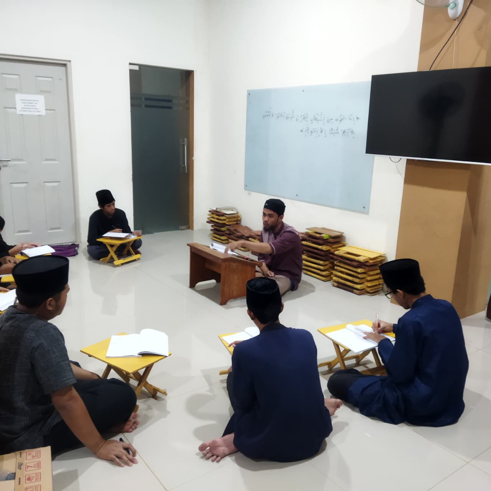
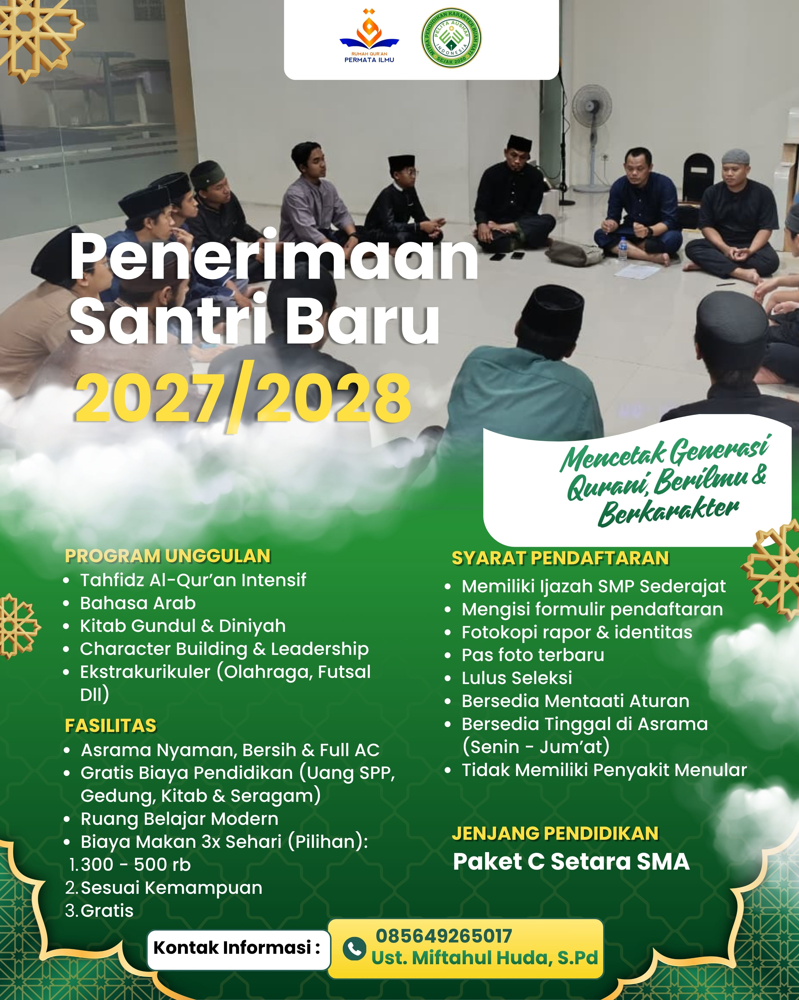
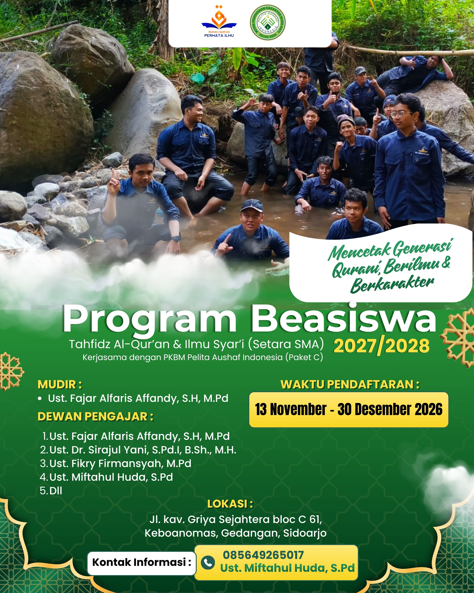
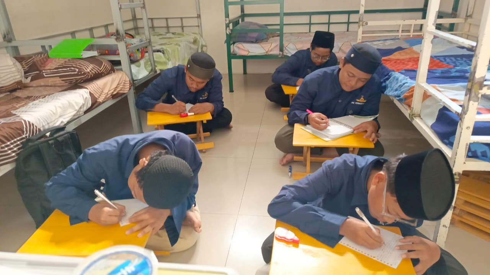
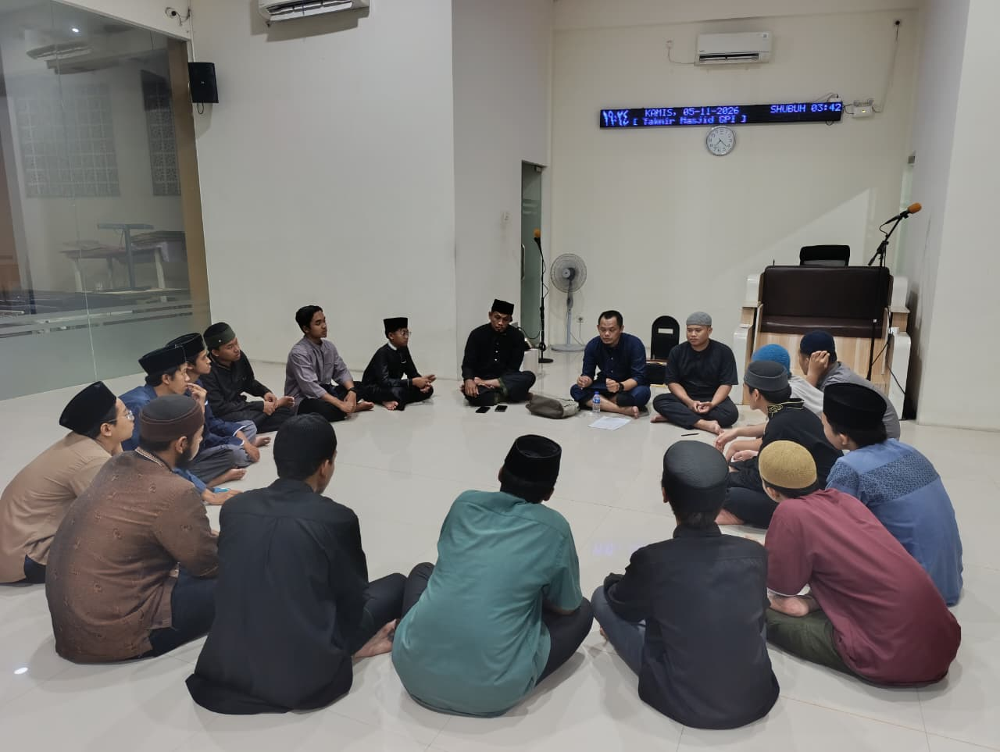
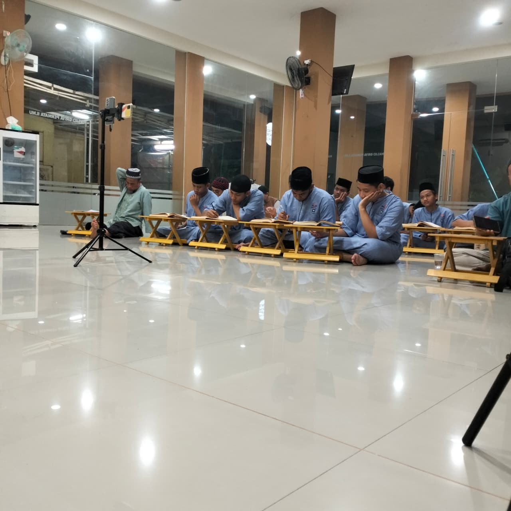
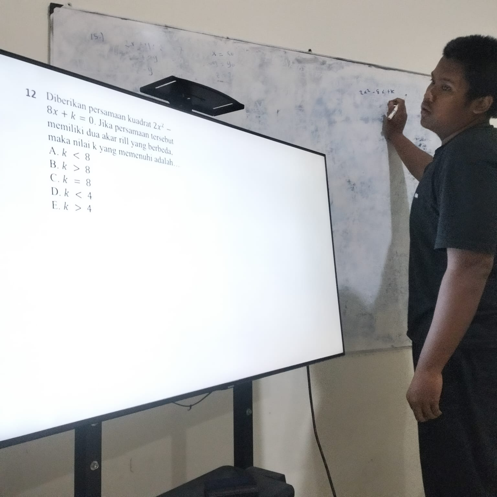
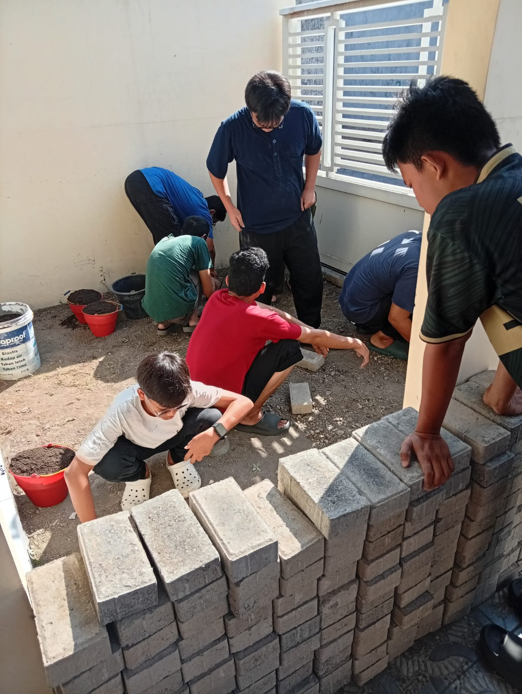
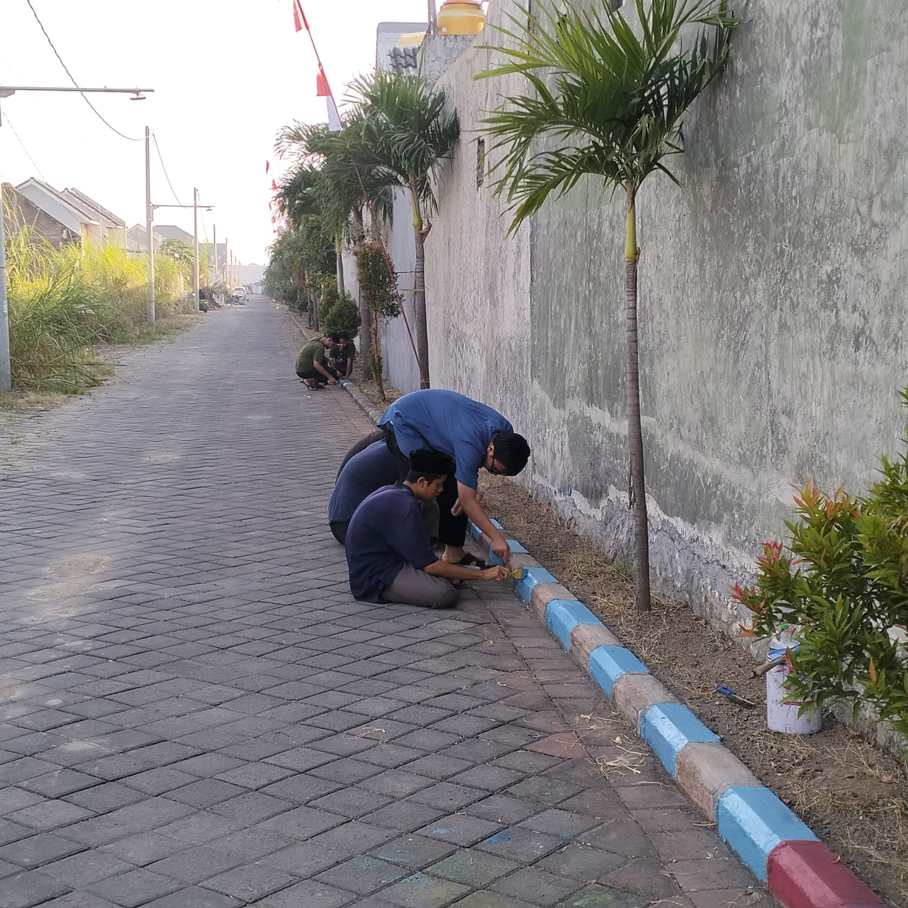

Program Beasiswa Tahfidz Al-Qur'an & Ilmu Syar'i (Setara SMA). Bekerjasama dengan PKBM Pelita Aushaf Indonesia.
Asatidz & Pengajar Ahli
Santri Binaan Aktif
Program Unggulan Terpadu
Waktu Pendaftaran: 13 November - 30 Desember 2026


Dokumentasi






Tanya Jawab
"Alhamdulillah, perkembangan akhlak dan bacaan Qur'an anak saya sangat pesat sejak dibina di Rumah Qur'an Permata Ilmu. Para asatidznya juga sangat ramah dan memantau dengan detail."
Wali Santri
"Fasilitas asrama sangat nyaman dan bersih. Meskipun program kejar paket, namun sistem pembelajaran dan disiplinnya tidak kalah dengan pondok pesantren besar lainnya."
Wali Santri
Informasi
13 Nov 2026
Pendaftaran untuk Program Beasiswa Tahfidz Al-Qur'an & Ilmu Syar'i (Setara SMA) telah dibuka hingga 30 Desember 2026.
01 Nov 2026
Untuk mendapatkan update kegiatan harian, pastikan Anda mem-follow Instagram resmi kami @rq_permatailmu.